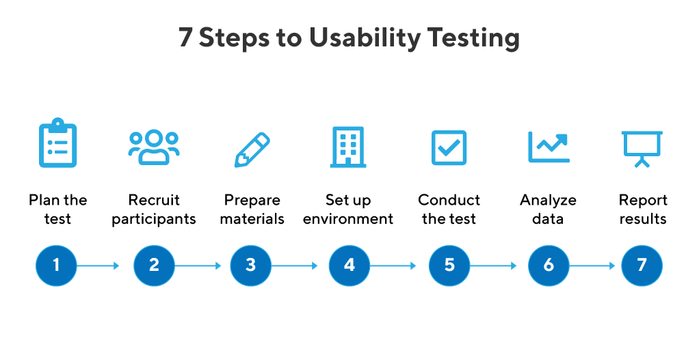

what is Usability Testing ?
design process, from initial concept to post-launch evaluation.
It involves asking participants to perform specific tasks related
to the product or service while their interactions
and feedback are observed and recorded
example of usability testing ..,
Lab usability testing. ...
Phone interview. ...
Session replay. ...
Card sorting. ...
Test scenario. ...
Usability benchmark test
